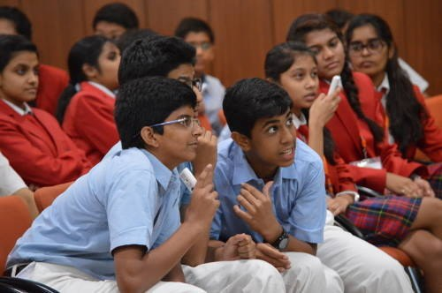
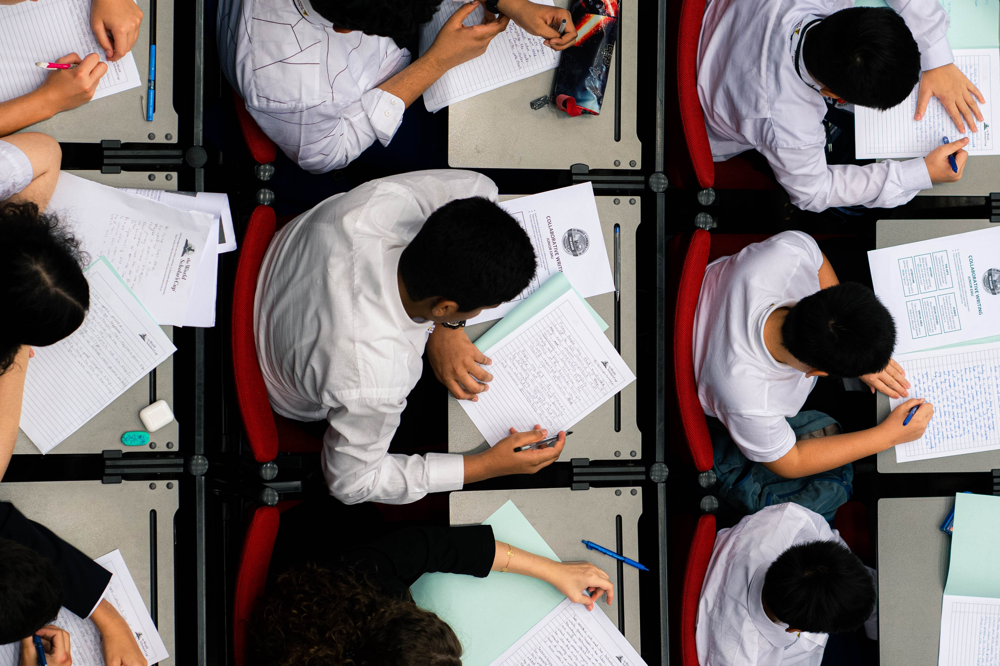
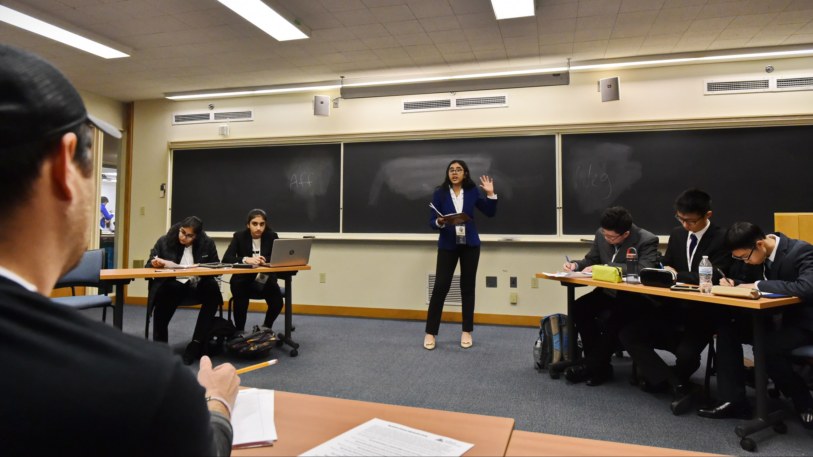
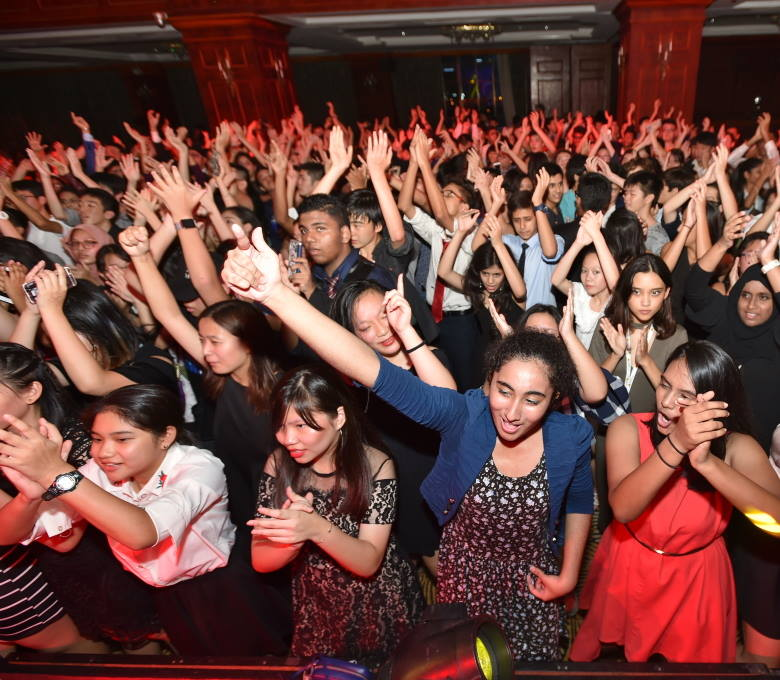

The World
Scholar's Cup
A celebration of learning, creativity, and friendship where students compete, collaborate, and discover new strengths.
Frontiers Education is the exclusive partner for the World Scholar's Cup in India.


A Celebration of Learning Unlike Any Other
The World Scholar's Cup is an international academic programme that celebrates curiosity, collaboration, and critical thinking. Each season, students around the world explore a unique annual theme through six interconnected subject areas, then come together at regional and global events to compete, perform, and connect.
Every World Scholar's Cup event is inclusive and encouraging. Two-thirds of students have never debated before they join. Over half are EFL learners. The programme is designed so every student can discover a new strength.


What Our Scholars Say
I'm ever so glad to have attended the global WSC in 2021. It was the fulcrum which changed both my university and academic aspirations. Before leading my team I was a prospective engineer destined for only Indian higher education. Today I find myself admitted to premier institutions of liberal arts studies, aspiring to law and political science. Such has been my tryst with Scholars Cup.Devika Sivaram, Dubai Modern High School — Yale University '2025
WSC taught me that learning doesn't have to be confined to a classroom. Debating with students from 70 countries, exploring ideas across history, science, and art — it opened my mind in ways I never expected. I came back a completely different student.Arjun Mehta, The Shri Ram School, Delhi — Global Round, Bangkok 2023
The Scholar's Cup gave me friendships that span continents. Our team won gold at the regional round, but the real prize was the confidence I found on stage — debating, performing, competing. Frontiers made every step of it possible for us.Priya Nair, Greenwood High, Bengaluru — Regional Champion 2024
Walking into Yale for the Tournament of Champions was surreal. I had never imagined standing in one of the world's greatest universities, competing with the best young minds on the planet. WSC didn't just prepare me academically — it showed me what I'm truly capable of.Rahul Krishnamurthy, DPS International — Tournament of Champions, Yale 2023
I had never debated before WSC. Now I can argue both sides of almost any topic with confidence. The programme pushed me out of my comfort zone in the best way. If you're on the fence — just do it. You will not regret it.Aanya Sharma, Step By Step School, Noida — Global Round, Kuala Lumpur 2024
WSC connected me with students who think differently, challenge ideas, and genuinely love learning. Those friendships are my most treasured takeaway. I travelled to three countries, earned medals in four subjects, and grew more than I thought possible in a single year.Ishaan Verma, Pathways World School, Gurgaon — Global Round 2022 & 2023
Your WSC Journey
Regional Round
Teams of three compete at one of 12 regional rounds held across India every year. Frontiers Education organizes regional rounds in multiple cities, making participation accessible to 200+ schools and 5,000+ students.
Global Round
Top teams advance to the Global Round — held in world-class destinations like Bangkok and Kuala Lumpur — where they compete alongside students from 70+ countries across six subject areas.
Tournament of Champions
The highest-scoring teams from Global Rounds earn the right to compete at the Tournament of Champions, held annually at Yale University in New Haven, Connecticut.
The Four Events in the World Scholar's Cup
Scholar's Bowl
A fast-paced quiz that tests breadth of knowledge across all six subject areas. Teams of three work together to answer questions drawn from the season's curriculum — rewarding curiosity and collaborative thinking.

Collaborative Writing
Students write individually across multiple essay genres, responding to prompts that blend creativity with critical thought. Writing is scored on argument, style, and engagement with the season's theme.

Scholar's Challenge
An individual multiple-choice exam across six subjects. The Scholar's Challenge rewards deep preparation and interdisciplinary thinking, covering everything from science and history to art and special areas.

Team Debate
Teams of three debate motions connected to the season's theme. No prior experience required — WSC uses an accessible format designed to build confidence and communication skills in every student.

Six Subject Areas
Each year, all four events draw from the same six interdisciplinary subjects — unified by a unique annual theme that changes every season.
History & Current Events
From ancient civilisations to today's headlines — explored through the lens of the season's theme.
Science & Technology
The wonders of the natural world, emerging technologies, and the ethical questions they raise.
Literature & Media
Novels, poetry, film, and journalism — analysed for meaning, craft, and cultural context.
Art & Music
Visual art, architecture, and music across cultures and eras, connecting beauty to the broader theme.
Social Studies
Economics, geography, civics, and ethics — understanding how societies are organised and why it matters.
Special Area
A wildcard subject unique to each season — from food science to philosophy to the history of games.

Tournament of Champions
The Tournament of Champions at Yale University is the final stage of the WSC season. Only teams who qualify through their Global Round scores earn the right to compete — making it the world's most prestigious student academic tournament.
Elite Competition
Compete against the highest-scoring teams from 70+ countries in Scholar's Bowl, Debate, Writing, and Scholar's Challenge.
Global Community
Form friendships with brilliant young minds from every continent, united by a love of learning and a spirit of friendly competition.
Yale Experience
Meet Yale faculty & students, attend a college admissions panel, debate in Yale Classrooms, and explore one of the world's most beautiful university campuses.
Iconic Highlights
The Yale Ball, Woolsey Hall, the Shubert Theatre, a campus-wide scavenger hunt and real alpacas, including Painted Warrior, the official alpaca of the Tournament of Champions.
Life at the WSC


Start Your WSC Journey Today
Frontiers Education is India's exclusive partner for the World Scholar's Cup. Get in touch and we'll help your school register for the next regional round.
Contact Us